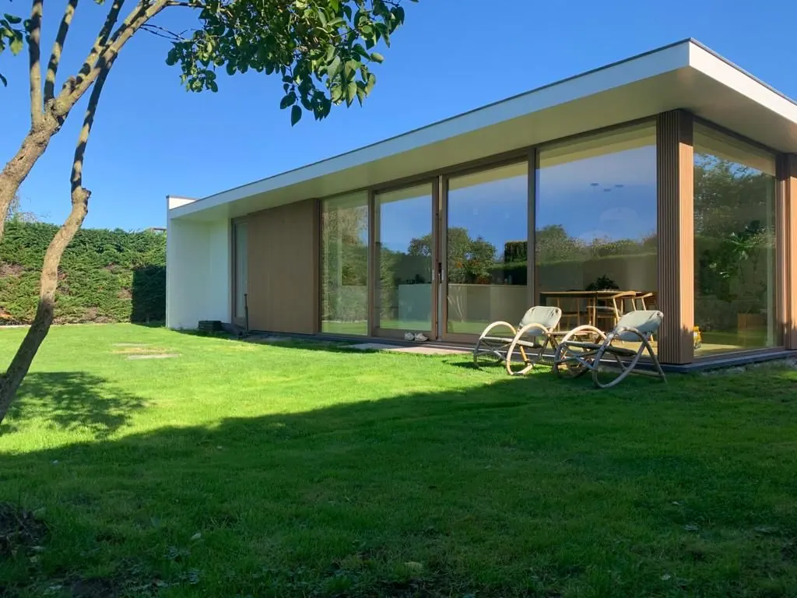
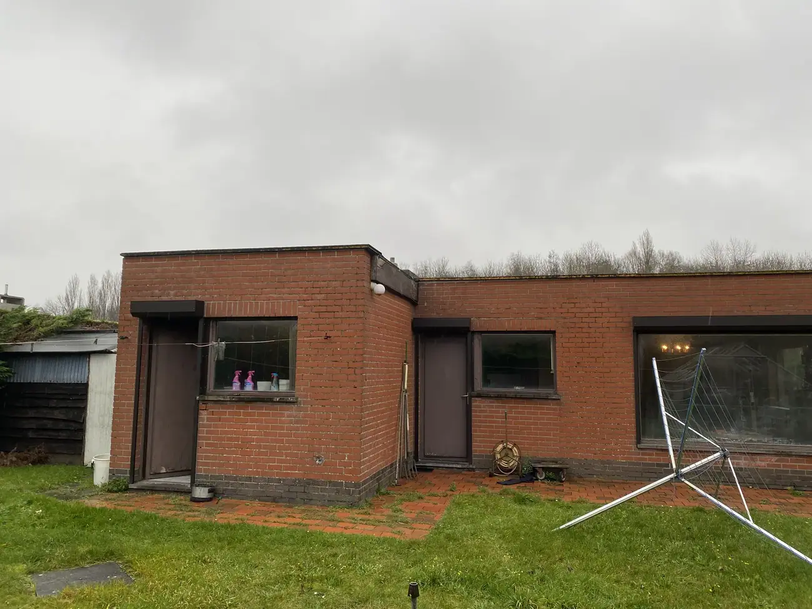
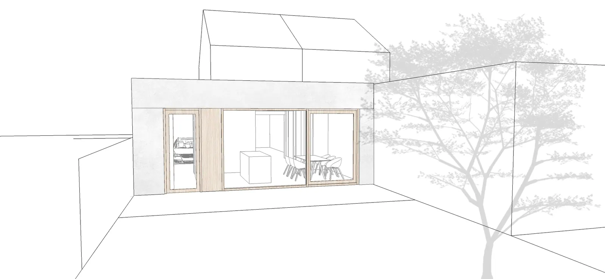
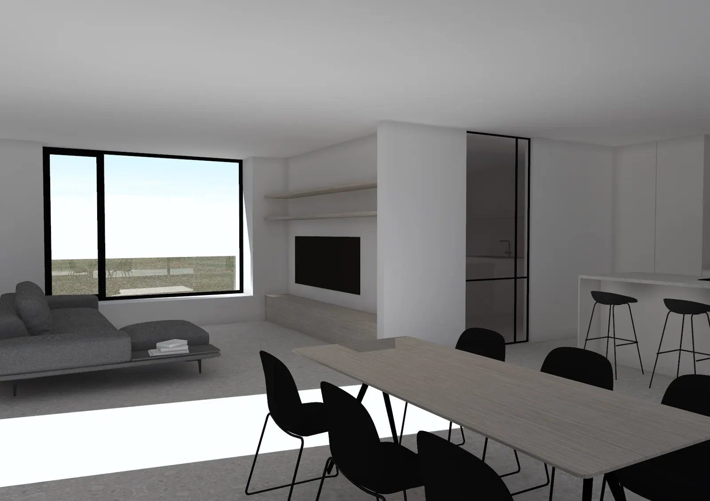
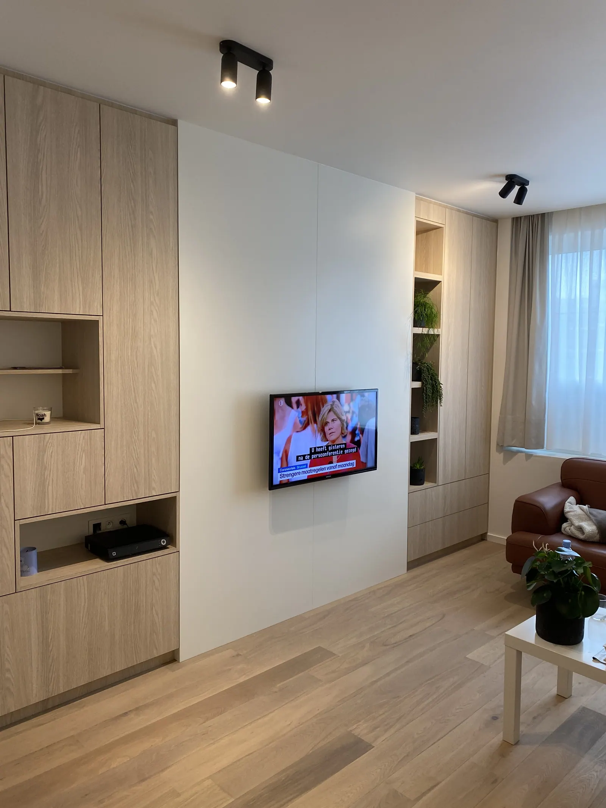
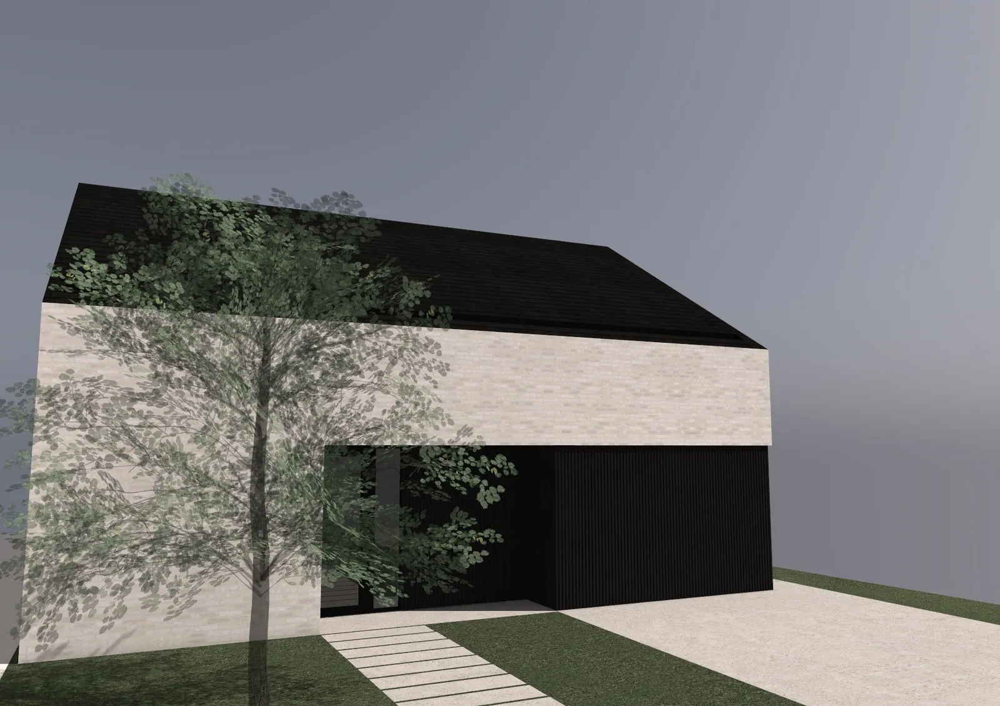
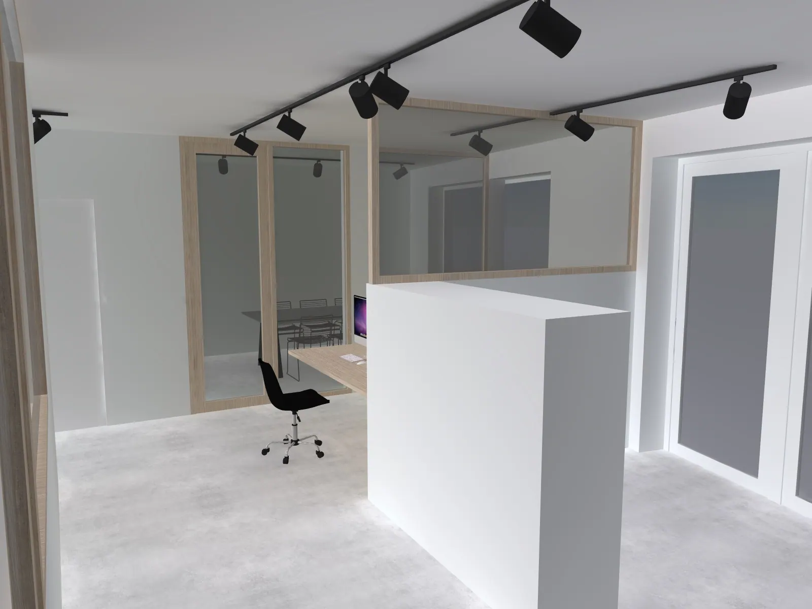
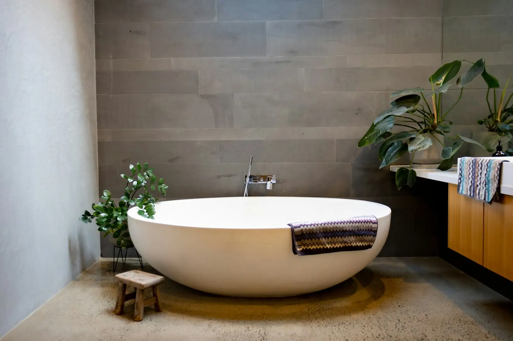
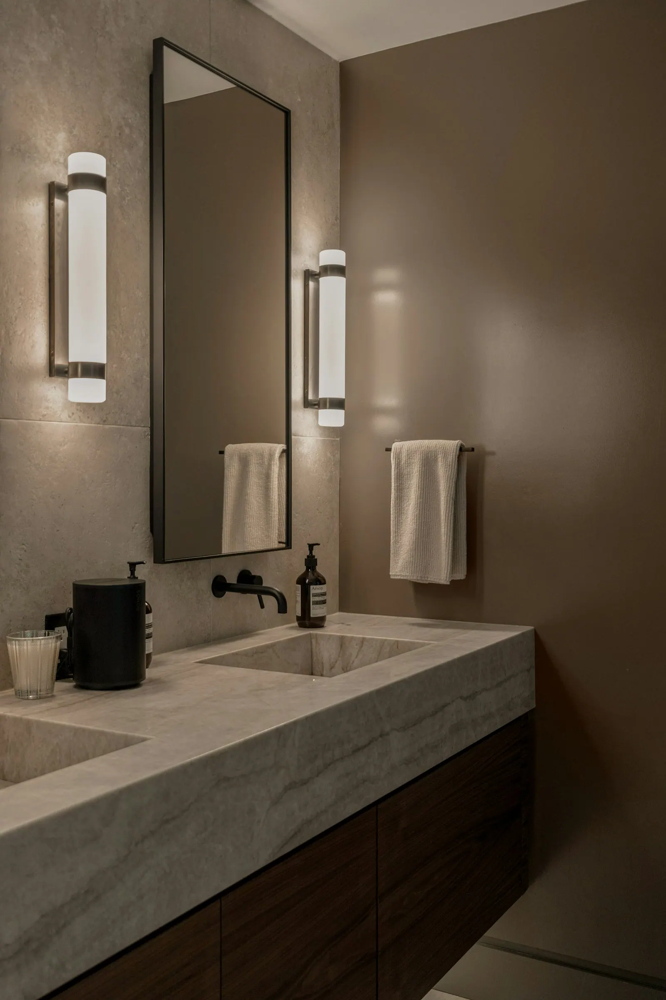
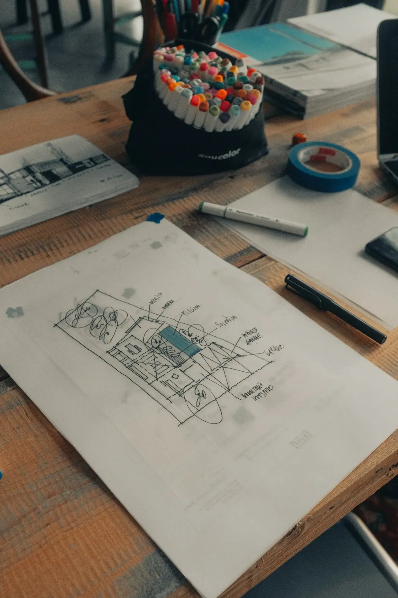

Uw huis zien voor het gebouwd wordt.
Nieuwbouw, renovatie of een nieuwe badkamer. Elk ontwerp wordt in 3D uitgetekend, met de texturen van echte materialen.
4,5★★★★½Beoordeling op Google

VoorVan een schets tot de sleutel.
Drie fasen, elk met een duidelijk beeld. Zo zijn er op de werf minder verrassingen.

Schets en gesprek
We bespreken uw wensen. De eerste ideeën gaan op papier.

3D met echte materialen
U ziet hoe het licht valt en hoe de houttint naast de steen staat.

Uitvoering en opvolging
De werf wordt opgevolgd tot alles staat zoals het getekend werd.
Een nieuwe woning of één kast.
Voor kleine en grote opdrachten kan u terecht, in Diksmuide en de rest van de Westhoek.

Nieuwbouw
Ontwerp, vergunningsaanvraag en opvolging van de werf, volgens uw wensen.

Renovatie
Een andere indeling of een volledige verbouwing.

Badkamers
Inrichten of herinrichten.

Keukens en kasten
Inbouwkasten op maat uitgetekend.
Bij elk project
- 3D-visualisatie
- Texturen van echte materialen
- Opvolging tot de oplevering

Een architect uit de Westhoek.
Inse Vanneuville werkt vanuit de Tuinwijk in Diksmuide. Het bureau tekent nieuwbouw, renovaties en interieurs, voor gezinnen die precies willen weten waar ze aan beginnen.
Twijfelt u tussen een warme houttint of een koele steen? In 3D ziet u het verschil meteen, in uw eigen ruimte.
Goed om te weten.
Waarom een 3D-ontwerp?
Op een plan is het moeilijk om een ruimte echt voor te stellen. In 3D, met echte materialen, ziet u vooraf hoe alles eruitziet. Dat maakt kiezen makkelijker.
Kan ik ook voor een kleine renovatie terecht?
Ja. Zowel kleine als grote renovaties horen erbij.
Tekent u ook enkel een badkamer of keuken?
Ja. Badkamers, keukens en inbouwkasten worden ook apart uitgetekend.
Hoe begin ik?
Bel of mail. Heeft u al foto's van uw woning of een idee op papier, stuur ze gerust mee.
Vertel over uw plannen.
Een eerste gesprek is de beste start.
0472 86 07 38Bellen info@ivarchitect.beMailen Tuinwijk 438600 Diksmuide